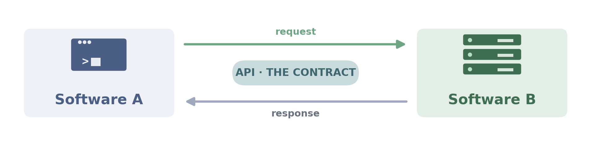

Anatomy of an HTTP message
![Two stacked HTTP messages between a tall CLIENT pillar (left, with laptop glyph) and a tall SERVER pillar (right, with server-stack glyph, labelled 'FastAPI · uvicorn'). TOP envelope — REQUEST (navy border): tab labelled 'REQUEST client to server'. Three sections each with a coloured left bar — navy 'START LINE' (POST /ask HTTP/1.1), teal 'HEADERS' (Host: rag-api.example.com, Content-Type: application/json), sage 'BODY' ({question: What is RAG?, top_k: 5}). Navy arrows: client to envelope to server. BOTTOM envelope — RESPONSE (green border): tab labelled 'RESPONSE server to client'. Sections: green 'STATUS LINE' (HTTP/1.1 200 OK), teal 'HEADERS' (Content-Type, X-Request-Id), sage 'BODY' ({answer: RAG fetches context..., sources: [...]}). Green arrows: server to envelope to client. Caption: Both messages have the same three-part shape: start/status line, headers, body.](img/request_response.png)
From CLI to HTTP — REST, FastAPI, and the Python service pattern

Methods of a class. Same Python process.
class Calculator: def add(self, a, b): return a + b calc = Calculator() calc.add(2, 3)
Public functions in a package — what you reach after import.
import numpy as np import pandas as pd np.array([1, 2, 3]) pd.read_csv("data.csv")
Reachable over HTTP. Different processes, different machines.
# any language, any machine POST /chat content-type: application/json {"message": "hi"}
OS, GPU drivers, DB drivers, hardware — every layer of the stack exposes one.
os.path.exists("foo") # OS API cursor.execute("SELECT 1") # DB API torch.cuda.empty_cache() # GPU API
client.chat.completions.create(...) is the OpenAI Python SDK method — what you write in your Python code.POST /v1/chat/completions under the hood — the HTTP endpoint every major model provider implements (Ollama, OpenAI, Groq, Together, OpenRouter…).client.chat.completions.create(...) — a method on a Python object. The SDK's interface, designed for Python users.
POST api.openai.com/v1/chat/completions with a JSON body. OpenAI's public interface — any language can call it.
service code — the API just wraps it in a network layer
Resources accessed via URLs + a small set of HTTP verbs. Stateless, debuggable with curl.
One endpoint. The client sends a query describing exactly the fields it wants back.
Protobuf contracts, code-generated clients, binary on the wire. Common between microservices.
Persistent connection — server can push events to the client. Used for streaming and live updates.
| Style | Transport | Payload format |
|---|---|---|
| REST | HTTP |
JSON |
| GraphQL | HTTP |
JSON — with a query language inside the body |
| gRPC | HTTP/2 |
Protobuf — binary, schema-defined |
| WebSocket / SSE | persistent TCP |
JSON or binary — your choice |
![Five rows, one per HTTP method, each a chip row with role labels. Row 1 — navy GET chip + teal /documents chip + amber /42 chip → 'read document #42' | green badge 'Yes — safe to retry'. Role labels below: verb · collection · id · idempotent? Row 2 — sage POST chip + teal /documents chip → 'create a new document' | red badge 'No — retries duplicate'. Row 3 — amber PUT chip + teal /documents chip + amber /42 chip → 'replace document #42 entirely' | green badge 'Yes'. Row 4 — lavender PATCH chip + teal /documents chip + amber /42 chip → 'partially update document #42' | grey badge 'Usually'. Row 5 — red DELETE chip + teal /documents chip + amber /42 chip → 'remove document #42' | green badge 'Yes'. Footer: Same noun (/documents/42) reused across verbs — the verb decides the operation.](img/methods_urls.png)
GET and DELETE are safe; POST isn’t — a retried POST /orders creates two orders.
![Three side-by-side colored zones. LEFT (green) — 2xx SUCCESS: 200 OK (standard success with body), 201 Created (new resource was made), 204 No Content (success, no body returned). MIDDLE (amber) — 4xx CLIENT ERROR: 400 Bad Request (malformed payload), 401 Unauthorized (missing/invalid auth), 404 Not Found (no such resource), 422 Unprocessable (Pydantic validation failed). RIGHT (red) — 5xx SERVER ERROR: 500 Internal (your code raised), 502 Bad Gateway (upstream call failed), 503 Unavailable (service down/overloaded), 504 Gateway Timeout (upstream too slow). Footer: first digit = family signal — the rest narrows the situation.](img/status_codes.png)
from flask import Flask, request, jsonify app = Flask(__name__) @app.route("/ask", methods=["POST"]) def ask(): data = request.get_json() if "question" not in data: return jsonify( {"error": "missing question"} ), 400 if not isinstance(data["question"], str): return jsonify( {"error": "must be str"} ), 400 top_k = data.get("top_k", 5) result = rag.answer( data["question"], top_k=top_k ) return jsonify(result.__dict__)
Manual JSON parsing, manual validation, manual error responses, no docs page.
from fastapi import FastAPI from pydantic import BaseModel class AskRequest(BaseModel): question: str top_k: int = 5 class AskResponse(BaseModel): answer: str sources: list[str] app = FastAPI() @app.post("/ask", response_model=AskResponse) def ask(req: AskRequest): return rag.answer( req.question, top_k=req.top_k, )
Pydantic validates and parses. Errors return a clean 422. /docs is generated automatically.
LLMClient.chat(...), same message list, same multi-turn loop. Only the transport changes — stdin becomes an HTTP route, print() becomes a JSON response, one in-memory list becomes a dict keyed by session_id.
from app.llm.client import LLMClient client = LLMClient() messages = [{"role": "system", "content": SYSTEM_PROMPT}] while True: text = input("you ▸ ") messages.append({"role": "user", "content": text}) reply = client.chat(messages) print("bot ▸", reply) messages.append({"role": "assistant", "content": reply})
from fastapi import FastAPI from pydantic import BaseModel from app.llm.client import LLMClient app = FastAPI() client = LLMClient() sessions: dict[str, list] = {} class ChatRequest(BaseModel): session_id: str message: str @app.post("/chat") def chat(req: ChatRequest): history = sessions.setdefault(req.session_id, [SYSTEM_MSG]) history.append({"role": "user", "content": req.message}) reply = client.chat(history) history.append({"role": "assistant", "content": reply}) return {"reply": reply}
/openapi.json, rendered as a clickable Swagger UI at /docs.
A JSON file describing every endpoint, parameter, request body, response shape, and error. Industry standard for REST APIs.
served at /openapi.json
A web interface that reads an OpenAPI spec and renders a clickable list of endpoints — with a "Try it out" button that calls your live server.
served at /docs
A second viewer for the same spec — cleaner reference layout, no "try it out". Good for sharing with external consumers.
served at /redoc
/docs looks like in the browserAskRequest/chat call must include the full conversation history. Where you keep that history decides how the service scales and what survives a restart.
sessions: dict[str, list[dict]] = {} @app.post("/chat") def chat(req: ChatRequest): history = sessions.setdefault(req.session_id, [SYSTEM_MSG]) history.append({"role": "user", "content": req.message}) reply = client.chat(history) history.append({"role": "assistant", "content": reply}) return {"reply": reply, "turns": len(history) // 2}
Fine for a demo — one process, fast lookups, no extra infrastructure. Two limits show up the moment you go past one instance:
curl -s localhost:8000/health curl -s -X POST localhost:8000/chat \ -H 'content-type: application/json' \ -d '{"session_id":"a","message":"hi"}'
No code to write. Fast feedback that the service is up and accepts your payload.
FastAPI ships Swagger UI at /docs. Click an endpoint, click Try it out, paste a JSON body, hit Execute. Best for showing colleagues or QA people who don't write code.
Pydantic validation errors show up as 422 with the exact field that failed — no need to dig through tracebacks.
import requests r = requests.post( "http://localhost:8000/chat", json={"session_id": "a", "message": "hi"}, ) print(r.status_code, r.json())
Same call shape as production clients. Drives the notebook walkthrough.
from fastapi.testclient import TestClient import assistant_api client = TestClient(assistant_api.app) def test_health(): assert client.get("/health").status_code == 200
TestClient calls routes in-process — no server needed, no network. CI runs these on every push.